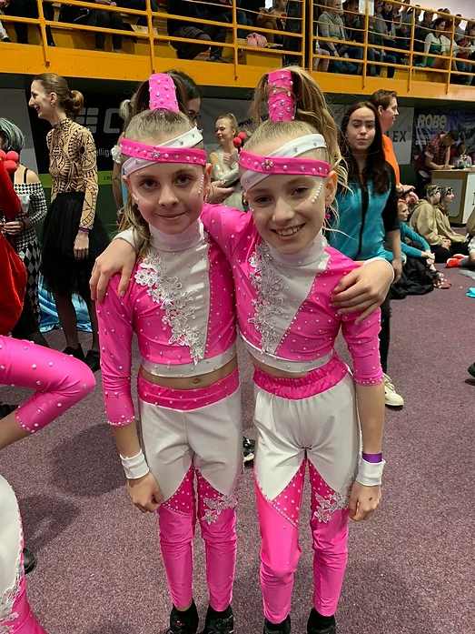
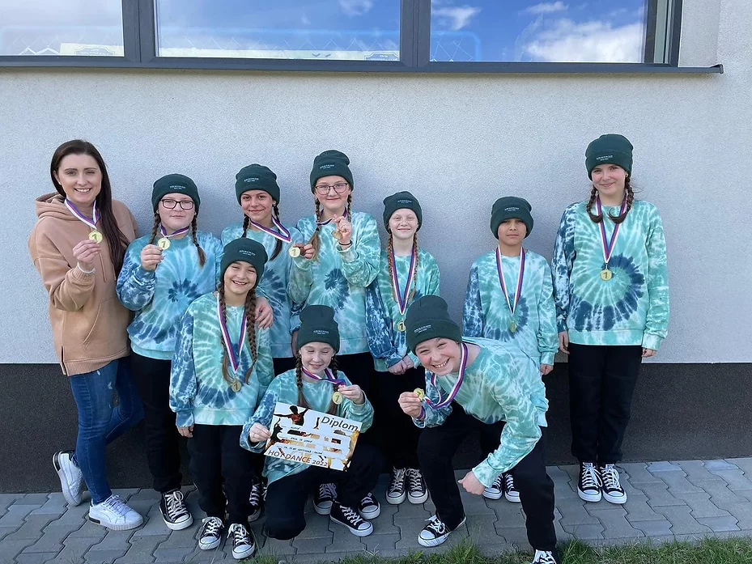

Dům dětí a mládeže Orlová
Vyplnění volného času dětí, mládeže, jejich rodičů a ostatních zájemců.
- Estetika
- Tělovýchova
- Taneční klub JOY & TBC
- Přírodověda
- Klub Spirála
- MC Bejbáček
-

Oddělení přírodovědy poskytuje, již od otevření nové budovy Domu dětí a mládeže Orlová. v roce 1990, dětem možnost nahlédnout do světa přírodních věd. Hlavním lákadlem pro děti je svět zoologie a botaniky, kde na ně na velkém prostoru pěti místností čeká doslova „celý svět“.
- Přírodověda -

Taneční klub Joy byl založen v září roku 2015. Zakladatelkou a hlavní vedoucí klubu je Kateřina Šostoková. Věnujeme se tanečnímu stylu disco dance a show dance, tanečníky rozdělujeme do skupin dle výkonnostní třídy a věku.
- Taneční klub Joy -

Taneční crew To be continued (TBC) vznikla v roce 2010 během letních prázdnin, kdy jsme si jako partička přátel řekli, že chceme tvořit i jiné věci než, na které jsme byli doposud zvyklí. Vždy nás zajímal taneční styl streetdance, který nabízí širokou škálu stylů jako je například (housedance, lockin, popin, dance hall, new style a mnoho dalších).
- Taneční klub To be continued